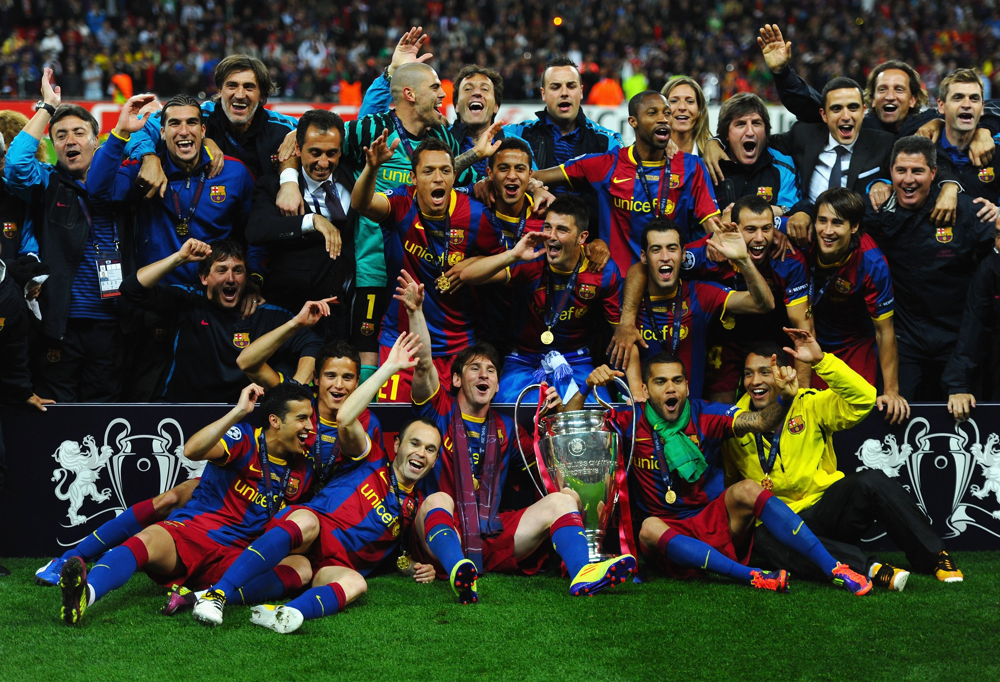

Pasado y presente

El fútbol, como deporte, tiene sus raíces en juegos antiguos que involucraban el uso de los pies para golpear una pelota. Sin embargo, la versión moderna del fútbol se desarrolló principalmente en el siglo XIX en Inglaterra. En 1863, se fundó la Football Association (FA), que estableció las primeras reglas formales del fútbol, conocidas como "reglas de Cambridge". Estas normas sentaron las bases para el deporte tal como lo conocemos hoy en día. En ese momento, el fútbol aún se jugaba en diferentes formas y no existía un consenso absoluto sobre las reglas.
Con el tiempo, el fútbol se popularizó rápidamente y se expandió más allá de las fronteras británicas. En 1886, se fundó la International Football Association Board (IFAB) para unificar las reglas del juego y permitir una mayor cohesión en las competiciones internacionales. El primer torneo internacional de fútbol fue la British Home Championship, que comenzó en 1884. Sin embargo, el evento más influyente para el fútbol mundial fue el establecimiento de la FIFA (Fédération Internationale de Football Association) en 1904 en París, Francia. La FIFA se convirtió en el organismo rector del fútbol a nivel mundial y organizó el primer torneo de la Copa Mundial en 1930 en Uruguay.
A lo largo del siglo XX, el fútbol se consolidó como el deporte más popular del mundo. Se crearon ligas profesionales en varios países y el deporte continuó creciendo en popularidad, atrayendo a millones de seguidores y dando lugar a grandes competiciones a nivel de clubes y selecciones nacionales.En la actualidad, el fútbol sigue siendo un fenómeno global, con eventos como la Copa Mundial de la FIFA y la UEFA Champions League que capturan la atención de aficionados de todas partes del mundo y continúan escribiendo la historia de este apasionante deporte.